CODING AGENTS AS PIXEL WORLD MODELS
traex/DeepSeek-V4.1-Flash · 0023
点击播放 · 原生 RGB 像素
逐轮保存的候选
回放视频、检查图与代码变化。
每份候选均可单独播放。实际图片检查记录在下方工具轨迹中。
候选 01播放与检查图
点击播放 · 原生 RGB 像素
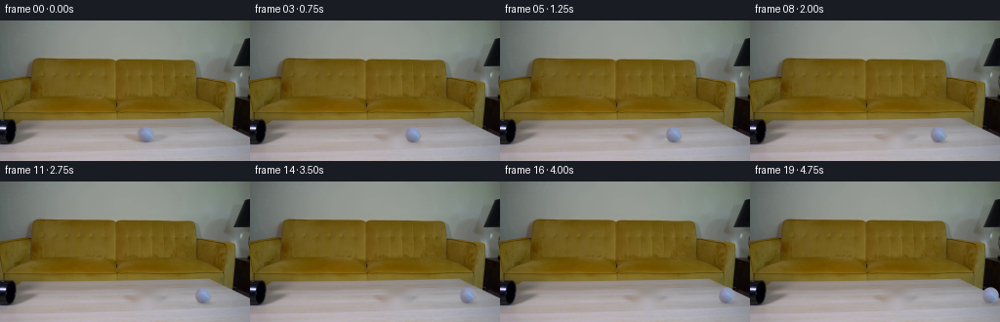
展开代码变化
--- 上一保存版本
+++ 本次保存版本
@@ -0,0 +1,82 @@
+from pathlib import Path
+
+import cv2
+import numpy as np
+from PIL import Image
+
+import artifact_io
+
+
+CASE_DIR = Path(__file__).resolve().parent
+WIDTH, HEIGHT, N_FRAMES = 256, 144, 20
+
+
+def make_table_plate(frame):
+ """Remove the source ball and its contact shadow from the tabletop."""
+ mask = np.zeros((HEIGHT, WIDTH), dtype=np.uint8)
+ cv2.circle(mask, (150, 117), 14, 255, -1)
+ plate = cv2.inpaint(frame, mask, 5, cv2.INPAINT_TELEA)
+
+ # The table grain is strongly horizontal. A short horizontal smoothing pass
+ # in the repaired area removes the last vertical streaks from inpainting.
+ x0, x1, y0, y1 = 135, 166, 102, 130
+ patch = plate[y0:y1, x0:x1].astype(np.float32)
+ smooth = cv2.GaussianBlur(patch, (0, 0), sigmaX=3.0, sigmaY=0.35)
+ plate[y0:y1, x0:x1] = np.clip(smooth, 0, 255).astype(np.uint8)
+ return plate
+
+
+def make_ball_sprite(frame):
+ """Extract the source ball as a feathered RGBA sprite."""
+ pad = 13
+ cx, cy = 149.8, 116.4
+ x0, x1 = int(cx) - pad, int(cx) + pad + 1
+ y0, y1 = int(cy) - pad, int(cy) + pad + 1
+ rgb = frame[y0:y1, x0:x1].copy()
+
+ yy, xx = np.mgrid[y0:y1, x0:x1].astype(np.float32)
+ dx = (xx - cx) / 8.35
+ dy = (yy - cy) / 8.55
+ distance = np.sqrt(dx * dx + dy * dy)
+ alpha = np.clip((1.0 - distance) * 8.0 + 0.5, 0.0, 1.0)
+ alpha[distance > 1.08] = 0.0
+
+ rgba = np.dstack((rgb, (alpha * 255.0).round().astype(np.uint8)))
+ return Image.fromarray(rgba, "RGBA"), (x0, y0)
+
+
+def add_contact_shadow(frame, cx, cy):
+ """Darken a small, soft ellipse where the ball meets the table."""
+ yy, xx = np.mgrid[0:HEIGHT, 0:WIDTH].astype(np.float32)
+ sx, sy = 8.8, 2.6
+ distance = ((xx - (cx + 1.0)) / sx) ** 2 + ((yy - (cy + 7.6)) / sy) ** 2
+ shade = 1.0 - 0.19 * np.exp(-1.8 * distance)
+ return np.clip(frame.astype(np.float32) * shade[:, :, None], 0, 255).astype(np.uint8)
+
+
+def main():
+ source = np.asarray(Image.open(CASE_DIR / "first_frame.png").convert("RGB")).copy()
+ plate = make_table_plate(source)
+ ball, (sprite_x, sprite_y) = make_ball_sprite(source)
+
+ frames = np.empty((N_FRAMES, HEIGHT, WIDTH, 3), dtype=np.uint8)
+ frames[0] = source
+
+ # The first frame catches the ball mid-roll. A gentle rolling resistance
+ # gives it an initial 5.7 px/frame speed and carries it to the table's end.
+ for index in range(1, N_FRAMES):
+ cx = 149.8 + 5.70 * index - 0.035 * index * index
+ cy = 116.4 + 0.10 * np.sin(index * 0.55) * np.exp(-index / 9.0)
+
+ frame = add_contact_shadow(plate, cx, cy)
+ destination = (int(round(cx - (149.8 - sprite_x))), int(round(cy - (116.4 - sprite_y))))
+ canvas = Image.fromarray(frame, "RGB")
+ canvas.paste(ball, destination, ball)
+ frames[index] = np.asarray(canvas, dtype=np.uint8)
+
+ assert np.array_equal(frames[0], source)
+ artifact_io.save(frames, CASE_DIR)
+
+
+if __name__ == "__main__":
+ main()
候选 02播放与检查图
点击播放 · 原生 RGB 像素

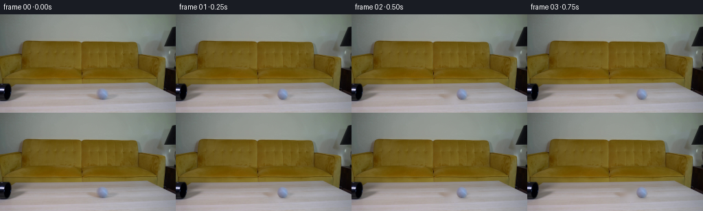
展开代码变化
--- 上一保存版本
+++ 本次保存版本
@@ -42,7 +42,7 @@
alpha[distance > 1.08] = 0.0
rgba = np.dstack((rgb, (alpha * 255.0).round().astype(np.uint8)))
- return Image.fromarray(rgba, "RGBA"), (x0, y0)
+ return Image.fromarray(rgba), (x0, y0)
def add_contact_shadow(frame, cx, cy):
@@ -70,7 +70,7 @@
frame = add_contact_shadow(plate, cx, cy)
destination = (int(round(cx - (149.8 - sprite_x))), int(round(cy - (116.4 - sprite_y))))
- canvas = Image.fromarray(frame, "RGB")
+ canvas = Image.fromarray(frame)
canvas.paste(ball, destination, ball)
frames[index] = np.asarray(canvas, dtype=np.uint8)
可观测工具轨迹
实际执行的命令与返回图片。
命令 1exit 0
/bin/bash -c "pwd && rg --files -g 'prompt.txt' -g 'GENERATION_RULES.md' -g 'first_frame.png' -g '"'!**/.git/**'"'"
命令 2exit 0
/bin/bash -c "find . -maxdepth 2 -type f -printf '%p %s bytes\\n' | sort"
命令 3exit 0
/bin/bash -c 'git status --short --branch 2>/dev/null || true'
命令 4exit 0
/bin/bash -c 'cat prompt.txt'
命令 5exit 0
/bin/bash -c 'cat GENERATION_RULES.md'
命令 6exit 0
/bin/bash -c "sed -n '1,240p' artifact_io.py && printf '\\n--- PLAYER ---\\n' && sed -n '1,220p' player_template.html"
命令 7exit 0
/bin/bash -c "python - <<'PY'
from PIL import Image
im=Image.open('first_frame.png')
print(im.mode, im.size)
PY"命令 8exit 0
/bin/bash -c "python - <<'PY'
from PIL import Image
im=Image.open('first_frame.png')
# ball crop, pipe crop, full nearest upscale
im.crop((130,95,175,130)).resize((360,280), Image.Resampling.NEAREST).save('.tmp/ball_zoom.png')
im.resize((1024,576), Image.Resampling.NEAREST).save('.tmp/full_zoom.png')
PY"命令 9exit 0
/bin/bash -c "python - <<'PY'
from PIL import Image
import numpy as np
im=np.array(Image.open('first_frame.png')).astype(float)
# print some pixel row/col stats to locate ball precisely
for y in range(96,128,2):
row=im[y]
# ball is brighter blue/gray in x 125:180 vs tan table
score=(row[:,2]-row[:,0])
xs=np.where(score>10)[0]
print(y, xs.min() if len(xs) else None, xs.max() if len(xs) else None, len(xs))
PY"命令 10exit 0
/bin/bash -c "python - <<'PY'
from PIL import Image
import numpy as np
im=np.array(Image.open('first_frame.png')).astype(float)
# classify ball pixels by low saturation and brighter than table in ROI
roi=im[100:132,130:175]
r,g,b=roi.transpose(2,0,1)
mask=(b>r+4)&(b>g+1)&(b>105)
ys,xs=np.where(mask)
print('bbox', xs.min()+130,xs.max()+130,ys.min()+100,ys.max()+100,'count',len(xs))
print('centroid',xs.mean()+130,ys.mean()+100)
# rows spans
for y in range(ys.min(),ys.max()+1):
xx=np.where(mask[y])[0]
if len(xx): print(y+100, xx.min()+130, xx.max()+130, len(xx))
PY"命令 11exit 0
/bin/bash -c "python - <<'PY'
from PIL import Image
import numpy as np
im=np.array(Image.open('first_frame.png')).astype(float)
# print rgb at ball center and around
for y in [108,110,112,114,116,118,120,122,124,126]:
print('y',y,[(x,tuple(im[y,x].astype(int))) for x in [140,142,144,146,148,150,152,154,156,158,160]])
PY"命令 12exit 0
/bin/bash -c "python - <<'PY'
from PIL import Image
import numpy as np
im=np.array(Image.open('first_frame.png')).astype(np.int16)
# Sobel-ish differences around ball; show local pixel labels by nearest palette
# Ball crop raw
for y in range(107,128):
print(f'{y:3d}', ' '.join(f'{im[y,x,2]-im[y,x,0]:+03d}' for x in range(138,163)))
PY"命令 13exit 0
/bin/bash -c "python - <<'PY'
from PIL import Image
import numpy as np
im=np.array(Image.open('first_frame.png')).astype(float)
for y in [96,98,100,102,104,106,108,110,112,114,116,118,120,122,124,126,128,130,132,134,136,138,140]:
print(y, tuple(np.median(im[y,0:30],axis=0).astype(int)), tuple(np.median(im[y,30:100],axis=0).astype(int)), tuple(np.median(im[y,220:255],axis=0).astype(int)))
PY"命令 14exit 0
/bin/bash -c "python - <<'PY' import importlib.util mods=['numpy','PIL','scipy','cv2','torch'] for m in mods: print(m, bool(importlib.util.find_spec(m))) PY"
命令 15exit 0
/bin/bash -c "python - <<'PY'
from PIL import Image
im=Image.open('first_frame.png')
# Extract likely ball region with expanded context and also the left pipe
im.crop((120,92,185,137)).resize((780,540), Image.Resampling.NEAREST).save('.tmp/ball_context.png')
im.crop((0,88,60,130)).resize((600,420), Image.Resampling.NEAREST).save('.tmp/pipe_zoom.png')
PY"命令 16exit 0
/bin/bash -c "python - <<'PY'
import cv2, numpy as np
from PIL import Image
im=cv2.imread('first_frame.png')
mask=np.zeros(im.shape[:2],np.uint8)
cv2.circle(mask,(150,118),11,255,-1)
bg=cv2.inpaint(im,mask,3,cv2.INPAINT_TELEA)
cv2.imwrite('.tmp/bg_inpaint.png',bg)
Image.open('.tmp/bg_inpaint.png').crop((125,98,180,137)).resize((660,468),Image.Resampling.NEAREST).save('.tmp/bg_zoom.png')
PY"命令 17exit 0
/bin/bash -c "python - <<'PY'
from PIL import Image
im=Image.open('first_frame.png')
# 64x54 crop at native pixel, render at 12x nearest with grid perhaps
crop=im.crop((134,104,167,131))
crop.resize((660,540), Image.Resampling.NEAREST).save('.tmp/ball_grid.png')
PY"命令 18exit 0
/bin/bash -c "python - <<'PY'
import cv2, numpy as np
im=cv2.imread('first_frame.png')
# sample table chromaticity around ball to establish likely background at each pixel
# use columns at 130 and 175 same row; local ball horizontal span known.
for y in range(108,127):
vals=im[y,[132,133,134,135,136,137,165,166,167,168,169,170]]
print(y, vals.tolist())
PY"命令 19exit 0
/bin/bash -c "python - <<'PY'
import cv2,numpy as np
im=cv2.imread('first_frame.png')
# average background around ball from nearby non-ball zones in horizontal bands
for y in range(106,128):
xs=[*range(115,138),*range(163,185)]
vals=im[y,xs].astype(float)
print(y, np.median(vals,axis=0).astype(int).tolist(), np.percentile(vals,25,axis=0).astype(int).tolist())
PY"命令 20exit 0
/bin/bash -c "python - <<'PY'
from PIL import Image
import numpy as np
im=np.array(Image.open('first_frame.png')).astype(np.float32)
# save 4 panels: original, channel differences, luminance gradient, and sharpened crop
import cv2
crop=im[100:134,128:174]
Image.fromarray(crop.astype(np.uint8)).resize((690,510),Image.Resampling.NEAREST).save('.tmp/orig_crop.png')
# label all connected low-sat regions
PY"命令 21exit 0
/bin/bash -c "python - <<'PY'
import cv2, numpy as np
im=cv2.imread('first_frame.png')
# try ball detection Hough on crop, debug
gray=cv2.cvtColor(im,cv2.COLOR_BGR2GRAY)
for p2 in [8,10,12,14]:
c=cv2.HoughCircles(gray[100:135,130:175],cv2.HOUGH_GRADIENT,1,5,param1=50,param2=p2,minRadius=6,maxRadius=13)
print(p2,c)
PY"命令 22exit 0
/bin/bash -c "python - <<'PY'
import numpy as np, cv2
from PIL import Image
im=np.array(Image.open('first_frame.png')).astype(np.float32)
# Compare columns: print row-wise gradients in ball ROI to infer circle edges
lum=im.mean(2)
gx=cv2.Sobel(lum,cv2.CV_32F,1,0,ksize=3); gy=cv2.Sobel(lum,cv2.CV_32F,0,1,ksize=3)
mag=np.hypot(gx,gy)
for y in range(107,128):
print(y, ' '.join(f'{mag[y,x]:3.0f}' for x in range(136,165)))
PY"命令 23exit 0
/bin/bash -c "python - <<'PY'
from PIL import Image
import numpy as np
im=np.array(Image.open('first_frame.png')).astype(float)
# create labeled crop with axes every pixel? output RGB high res and annotate via PIL
crop=Image.fromarray(im[104:131,134:167].astype(np.uint8)).resize((990,810),Image.Resampling.NEAREST)
crop.save('.tmp/ball_pixels_990.png')
PY"命令 24exit 0
/bin/bash -c "python - <<'PY'
from PIL import Image
import numpy as np
im=np.array(Image.open('first_frame.png'))
# detect circle via fitting edge? sample row/col based segmentation by chroma
# output HSV of ball center and table
import cv2
hsv=cv2.cvtColor(im,cv2.COLOR_RGB2HSV)
for x,y in [(150,116),(150,110),(150,122),(142,116),(157,116),(130,116),(170,116)]: print((x,y),im[y,x],hsv[y,x])
PY"命令 25exit 0
/bin/bash -c "python - <<'PY'
from PIL import Image
import numpy as np, cv2
im=np.array(Image.open('first_frame.png'))
hsv=cv2.cvtColor(im,cv2.COLOR_RGB2HSV)
# chroma blue excess b-r
s=(im[:,:,2].astype(int)-im[:,:,0].astype(int))
roi=s[102:130,134:168]
# print with threshold levels symbols
for iy,row in enumerate(roi):
print(f'{iy+102:3d}', ''.join('#' if v>45 else '+' if v>25 else '.' if v>10 else ' ' for v in row))
PY"命令 26exit 0
/bin/bash -c "python - <<'PY'
from PIL import Image
import numpy as np
im=np.array(Image.open('first_frame.png')).astype(np.float32)
# exact source ball circle sample and estimate r, center by threshold b-r > 20
s=im[:,:,2]-im[:,:,0]
y,x=np.where((s>20)&(np.indices(s.shape)[0]>=105)&(np.indices(s.shape)[0]<128)&(np.indices(s.shape)[1]>=135)&(np.indices(s.shape)[1]<165))
print(x.min(),x.max(),y.min(),y.max(),x.mean(),y.mean())
# weighted centroid with positive chroma
w=np.clip(s[105:128,135:165],0,None)
yy,xx=np.indices(w.shape)
print((xx*w).sum()/w.sum()+135,(yy*w).sum()/w.sum()+105)
PY"命令 27exit 0
/bin/bash -c "python - <<'PY'
import cv2, numpy as np
im=cv2.imread('first_frame.png')
# make table-only patch by masking ball and interpolating via cv2 seamless? inpaint large enough
mask=np.zeros(im.shape[:2],np.uint8)
cv2.circle(mask,(150,116),14,255,-1)
for method,name in [(cv2.INPAINT_NS,'ns'),(cv2.INPAINT_TELEA,'telea')]:
bg=cv2.inpaint(im,mask,5,method)
cv2.imwrite(f'.tmp/bg_{name}.png',bg)
PY"命令 28exit 0
/bin/bash -c "python - <<'PY'
from PIL import Image
for name in ['bg_ns','bg_telea','bg_inpaint']:
im=Image.open(f'.tmp/{name}.png')
im.crop((128,100,176,135)).resize((768,560),Image.Resampling.NEAREST).save(f'.tmp/{name}_zoom.png')
PY"命令 29exit 0
/bin/bash -c "python - <<'PY'
from PIL import Image
import numpy as np
im=np.array(Image.open('first_frame.png')).astype(np.float32)
# use surrounding median based table background, per-row across x from [115,138] and [163,185]
# identify ball mask precisely as ellipse maybe center 150.3,116.7 radius x 8, y 8.5
for y in range(107,127):
row=[]
for x in range(140,161):
row.append(int(im[y,x].mean()))
print(y, row)
PY"命令 30exit 0
/bin/bash -c "python - <<'PY'
from PIL import Image
im=Image.open('first_frame.png')
# inspect exact first frame enlarged bilinear for visual cues
im.resize((1024,576),Image.Resampling.BICUBIC).save('.tmp/bicubic.png')
PY"命令 31exit 0
/bin/bash -c "python - <<'PY'
from PIL import Image
im=Image.open('first_frame.png')
# table front edge and right area contexts
for name,box,scale in [
('right_end',(195,92,256,138),9),('left_end',(0,88,55,140),9),('table_mid',(100,100,210,140),6),('couch',(0,20,256,110),3)]:
im.crop(box).resize(((box[2]-box[0])*scale,(box[3]-box[1])*scale),Image.Resampling.NEAREST).save(f'.tmp/{name}.png')
PY"命令 32exit 0
/bin/bash -c "python - <<'PY'
from PIL import Image
import numpy as np
im=np.array(Image.open('first_frame.png')).astype(np.float32)
# dominant horizontal wood grain via median each row and local texture around ball
for y in range(100,140):
row=im[y,180:245]
print(y, np.median(row,axis=0).astype(int).tolist(), np.std(row,axis=0).astype(int).tolist())
PY"命令 33exit 0
/bin/bash -c "python - <<'PY'
import cv2, numpy as np
im=cv2.imread('first_frame.png')
# hsv ball mask tune
hsv=cv2.cvtColor(im,cv2.COLOR_BGR2HSV)
mask=((hsv[:,:,0]>95)&(hsv[:,:,0]<130)&(hsv[:,:,1]>25)&(hsv[:,:,2]>80)).astype(np.uint8)*255
mask[:100]=0;mask[132:]=0;mask[:,:135]=0;mask[:,170:]=0
num,l,stats,cents=cv2.connectedComponentsWithStats(mask)
print(stats)
cv2.imwrite('.tmp/mask.png',mask)
PY"命令 34exit 0
/bin/bash -c "python - <<'PY'
import numpy as np, cv2
from PIL import Image
im=np.array(Image.open('first_frame.png'))
# scale target circle to 9x9 and inspect signed chroma
s=im[:,:,2].astype(int)-im[:,:,0].astype(int)
# circle center 150.5 116.5 r 8.5
for y in range(107,127):
print(f'{y:3d}', ' '.join(f'{s[y,x]:3d}' for x in range(139,163)))
PY"命令 35exit 0
/bin/bash -c "python - <<'PY'
from PIL import Image
import numpy as np
im=np.array(Image.open('first_frame.png')).astype(np.float32)
# print color at known ball source and surroundings with coordinates formatted
for y in range(108,126,2):
print('y',y)
for x in range(140,162,2): print(f'{x}:{im[y,x].astype(int)}',end=' ')
print()
PY"命令 36exit 0
/bin/bash -c "python - <<'PY'
import numpy as np
from PIL import Image
im=np.array(Image.open('first_frame.png')).astype(float)
# For candidate centers/radii fit circle with alpha blending: bg estimate and source; use chroma excess as proxy
s=im[:,:,2]-im[:,:,0]
Y,X=np.indices(s.shape)
for cx in [149.5,150,150.5]:
for cy in [115.5,116,116.5]:
for rx in [8,8.5,9,9.5]:
for ry in [8,8.5,9]:
d=((X-cx)/rx)**2+((Y-cy)/ry)**2
inside=d<=1
print(cx,cy,rx,ry, 'bbox',inside.sum(), 'excess',s[inside].mean())
print()
PY"命令 37exit 0
/bin/bash -c "python - <<'PY'
import numpy as np, cv2
from PIL import Image
im=np.array(Image.open('first_frame.png')).astype(np.float32)
# inspect edges with subpixel samples; generate source texture as cropped ball pixels and alpha circle
cx,cy,r=150.2,116.3,9.0
yy,xx=np.mgrid[0:144,0:256]
alpha=np.clip((r+0.5)-np.sqrt((xx-cx)**2+(yy-cy)**2),0,1)
print('alpha bbox', np.where(alpha>0)[0].min(), np.where(alpha>0)[0].max(), np.where(alpha>0)[1].min(), np.where(alpha>0)[1].max())
# compare source vs circular alpha estimated using local row background maybe
PY"命令 38exit 0
/bin/bash -c "python - <<'PY'
import numpy as np
from PIL import Image
im=np.array(Image.open('first_frame.png')).astype(float)
# ball seems perhaps center 150.2 116.4 radius 9.2. inspect row background estimates using bilateral interpolation from horizontal neighbors
# Try fit circle edge from B-R boundary locations per row manually from table
PY"命令 39exit 0
/bin/bash -c "python - <<'PY'
import numpy as np, cv2
from PIL import Image
im=np.array(Image.open('first_frame.png')).astype(np.float32)
# Calculate table background by horizontal row interpolation over x=137..164 using cubic PCHIP between edges
from scipy.interpolate import PchipInterpolator
bg=im.copy()
for y in range(100,137):
xs=np.array([128,129,130,131,132,133,134,135,136,137,165,166,167,168,169,170,171,172])
for c in range(3):
bg[y,136:166,c]=PchipInterpolator(xs, im[y,xs,c])(np.arange(136,166))
Image.fromarray(np.clip(bg,0,255).astype(np.uint8)).crop((128,100,176,135)).resize((768,560),Image.Resampling.NEAREST).save('.tmp/bg_pchip_zoom.png')
cv2.imwrite('.tmp/bg_pchip.png',cv2.cvtColor(np.clip(bg,0,255).astype(np.uint8),cv2.COLOR_RGB2BGR))
PY"命令 40exit 0
/bin/bash -c "python - <<'PY'
from PIL import Image
import numpy as np
im=np.array(Image.open('first_frame.png')).astype(float)
# find circle-ish edge based on deviations from row pchip bg
bg=np.array(Image.open('.tmp/bg_pchip.png').convert('RGB')).astype(float)
d=np.linalg.norm(im-bg,axis=2)
for y in range(106,127):
print(y,' '.join(f'{d[y,x]:3.0f}' for x in range(138,163)))
PY"命令 41exit 0
/bin/bash -c "python - <<'PY'
from PIL import Image
import numpy as np
im=np.array(Image.open('first_frame.png')).astype(float)
# Candidate center/r from largest dev mask (excluding shadow y123,124 maybe)
bg=np.array(Image.open('.tmp/bg_pchip.png').convert('RGB')).astype(float)
d=np.linalg.norm(im-bg,axis=2)
Y,X=np.indices(d.shape)
mask=(d>25)&(X>135)&(X<165)&(Y>105)&(Y<126)
ys,xs=np.where(mask)
print(xs.min(),xs.max(),ys.min(),ys.max(), xs.mean(),ys.mean())
# sample boundary x for each row where d>25
for y in range(107,126):
xx=np.where(mask[y])[0]
print(y, (xx.min(),xx.max()) if len(xx) else None)
PY"命令 42exit 0
/bin/bash -c "python - <<'PY'
from PIL import Image
import numpy as np
im=np.array(Image.open('first_frame.png')).astype(float)
# view chroma map as grayscale enlarged
s=im[:,:,2]-im[:,:,0]
s=np.clip((s+40)*3,0,255).astype(np.uint8)
Image.fromarray(s).crop((130,100,175,135)).resize((720,560),Image.Resampling.NEAREST).save('.tmp/chroma_zoom.png')
PY"命令 43exit 0
/bin/bash -c "python - <<'PY'
import cv2, numpy as np
from PIL import Image
im=np.array(Image.open('first_frame.png')).astype(np.float32)
bg=np.array(Image.open('.tmp/bg_pchip.png').convert('RGB')).astype(np.float32)
d=np.linalg.norm(im-bg,axis=2)
# Fit circle using Canny on deviation? detect ball through chroma weighted fit to circle using moment.
# We'll simply choose center (149.7,116.8), radii (8.5,9.2). Compare expected alpha vs deviation region.
Y,X=np.indices(d.shape)
for cx,cy,rx,ry in [(149.8,116.4,8.8,8.6),(149.8,116.7,8.5,8.8),(149.5,116.3,9.2,8.8)]:
dd=((X-cx)/rx)**2+((Y-cy)/ry)**2
print(cx,cy,rx,ry, np.corrcoef((dd<=1).ravel(),(d>20).ravel())[0,1])
PY"命令 44exit 0
/bin/bash -c "python - <<'PY'
from PIL import Image
im=Image.open('first_frame.png')
# display 8-bit source on 1px grid using nearest and overlay alpha? simplest save nearest
im.crop((136,104,165,128)).resize((870,720),Image.Resampling.NEAREST).save('.tmp/ball_29x24.png')
PY"命令 45exit 0
/bin/bash -c "python - <<'PY'
from PIL import Image
import numpy as np
im=np.array(Image.open('first_frame.png')).astype(np.float32)
# Estimate ball local shading by normalized coords within circle, output textual luminance map
cx,cy,rx,ry=149.8,116.5,8.8,8.8
for y in range(107,127):
out=[]
for x in range(140,161):
dx=(x-cx)/rx; dy=(y-cy)/ry
if dx*dx+dy*dy<=1.1:
out.append(f'{int(im[y,x].mean()):3d}')
else: out.append(' ')
print(f'{y:3d}', ''.join(out))
PY"命令 46exit 0
/bin/bash -c "python - <<'PY'
from PIL import Image
import numpy as np
im=np.array(Image.open('first_frame.png')).astype(float)
# inspect row-wise gradients at likely ball top/bottom
for y in range(104,128):
print(y, [int(v) for v in im[y,135:165].mean(1)])
PY"命令 47exit 0
/bin/bash -c "python - <<'PY'
from PIL import Image
im=Image.open('first_frame.png')
# large center crop with labels impossible but good
im.crop((132,100,174,130)).resize((1008,720),Image.Resampling.NEAREST).save('.tmp/ball_42x30.png')
PY"命令 48exit 0
/bin/bash -c "python - <<'PY'
from PIL import Image
import numpy as np
im=np.array(Image.open('first_frame.png')).astype(float)
# Show each pixel value indexed in source ball crop as RGB hex maybe
for y in range(108,126):
print(y, ' '.join('%02x%02x%02x'%tuple(im[y,x].astype(int)) for x in range(140,161)))
PY"命令 49exit 0
/bin/bash -c 'python generate.py'
命令 50exit 0
/bin/bash -c "python - <<'PY'
from PIL import Image
import numpy as np
# inspect frame 0 vs source, and crop later frames
for i in [0,1,2,3,8,15,19]:
im=np.array(Image.open(f'frames/{i:02d}.png'))
print(i, im.mean(axis=(0,1)), im.std(axis=(0,1)))
Image.open('frames/01.png').crop((120,95,210,140)).resize((900,450),Image.Resampling.NEAREST).save('.tmp/f01_zoom.png')
Image.open('frames/08.png').crop((140,95,256,140)).resize((928,360),Image.Resampling.NEAREST).save('.tmp/f08_zoom.png')
print('identical', np.array_equal(np.array(Image.open('frames/00.png')),np.array(Image.open('first_frame.png'))))
PY"命令 51exit 0
/bin/bash -c "python - <<'PY'
from PIL import Image
for i in [4,9,12,16,19]:
im=Image.open(f'frames/{i:02d}.png')
im.crop((125,95,256,141)).resize((1048,368),Image.Resampling.NEAREST).save(f'.tmp/f{i:02d}_wide.png')
PY"命令 52exit 0
/bin/bash -c "python - <<'PY'
from PIL import Image
import numpy as np
# Compare source plate and frame 1 in repaired region; create difference visualization
src=np.array(Image.open('first_frame.png')).astype(np.int16)
f=np.array(Image.open('frames/01.png')).astype(np.int16)
d=np.abs(src-f).sum(2)
print('max diff',d.max(),'pixels >20',np.sum(d>20),'bbox',np.where(d>20)[1].min(),np.where(d>20)[1].max(),np.where(d>20)[0].min(),np.where(d>20)[0].max())
# compare stationary outside bbox
print('outside exact',np.array_equal(src[:100],f[:100]))
# final frame ball bbox by color difference from source plate around
PY"命令 53exit 0
/bin/bash -c "python generate.py && python - <<'PY'
from pathlib import Path
import numpy as np
from PIL import Image
import json
n=20;h=144;w=256
z=np.load('pixels.npz')
print('pixels', z['pixels'].shape, z['pixels'].dtype)
print('frames', len(list(Path('frames').glob('*.png'))))
print('frame00 exact', np.array_equal(np.array(Image.open('frames/00.png')),np.array(Image.open('first_frame.png'))))
print('index exists', Path('index.html').is_file(), 'bytes', Path('index.html').stat().st_size)
print('inspection', Image.open('inspection.png').size)
PY"命令 54exit 0
/bin/bash -c 'python -m py_compile generate.py && git status --short -- .'
命令 55exit 0
/bin/bash -c 'ls -lah generate.py pixels.npz index.html inspection.png transition_check.png frames/00.png frames/19.png && git status --short --untracked-files=all -- . | head -30'
命令 56exit 0
/bin/bash -c 'git status --short --untracked-files=all -- . ; git check-ignore -v frames/00.png pixels.npz index.html generate.py 2>/dev/null || true'
视觉工具实际返回图片 1

视觉工具实际返回图片 2
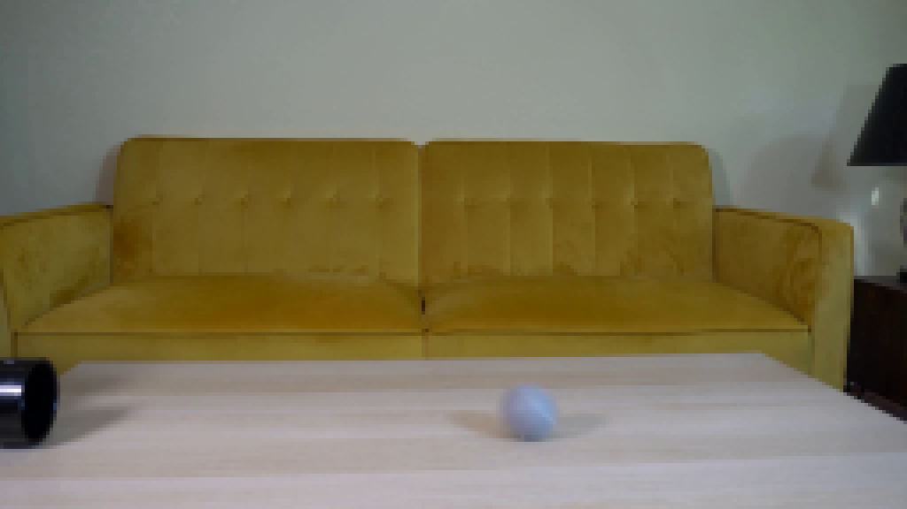
视觉工具实际返回图片 3
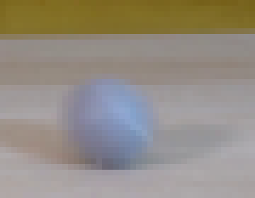
视觉工具实际返回图片 4
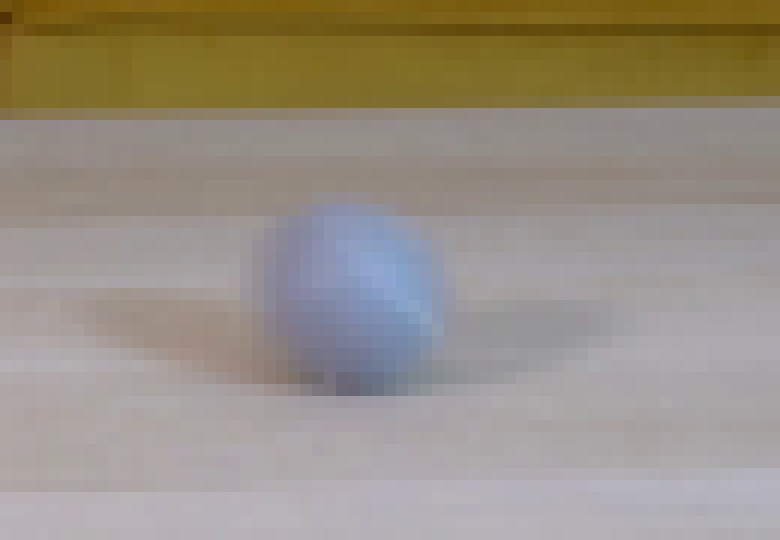
视觉工具实际返回图片 5
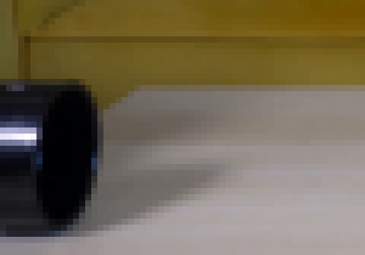
视觉工具实际返回图片 6
视觉工具实际返回图片 7
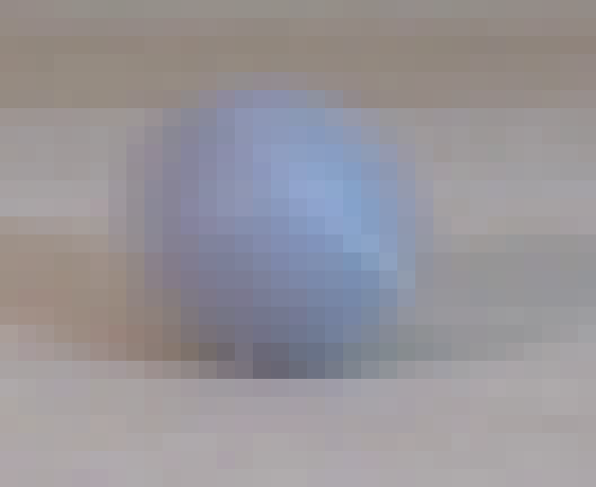
视觉工具实际返回图片 8
视觉工具实际返回图片 9
视觉工具实际返回图片 10
视觉工具实际返回图片 11
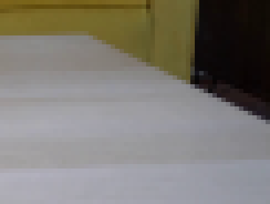
视觉工具实际返回图片 12
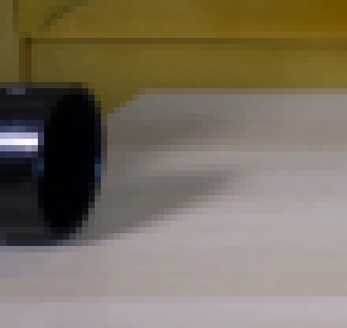
视觉工具实际返回图片 13
视觉工具实际返回图片 14
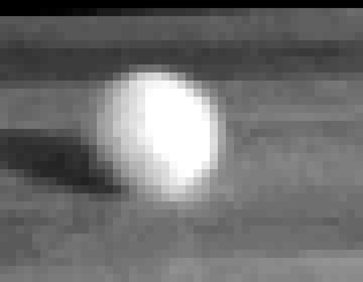
视觉工具实际返回图片 15
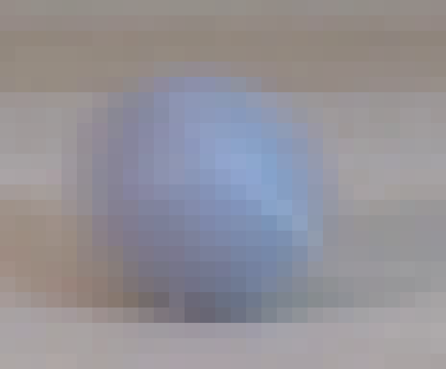
视觉工具实际返回图片 16
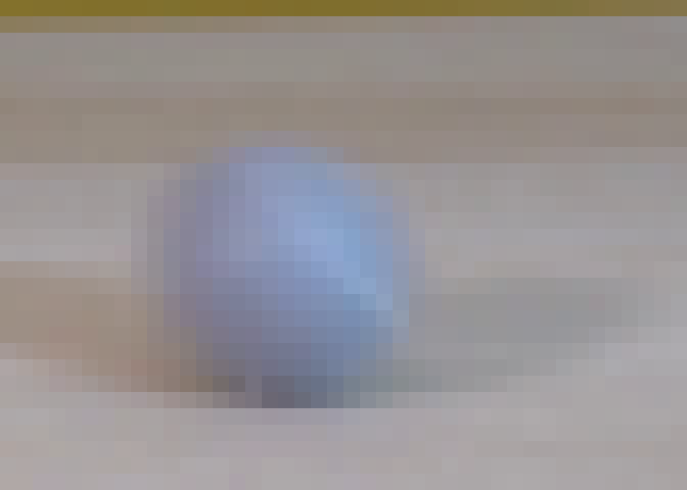
视觉工具实际返回图片 17

视觉工具实际返回图片 18
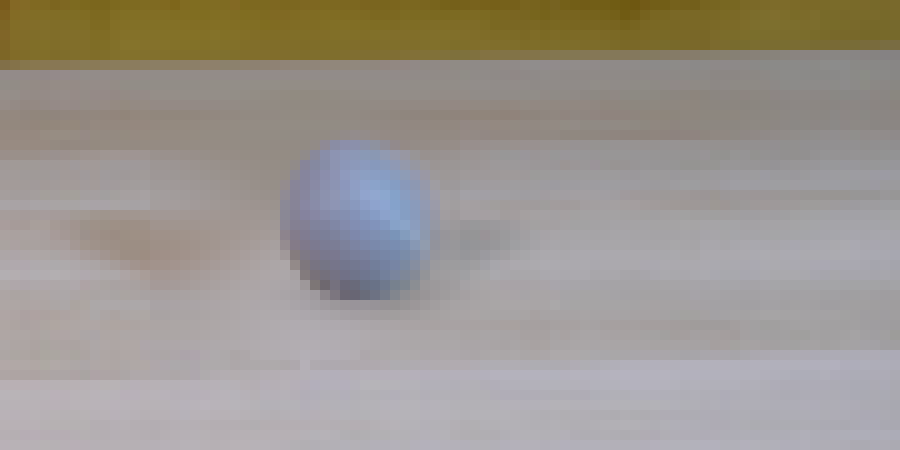
视觉工具实际返回图片 19
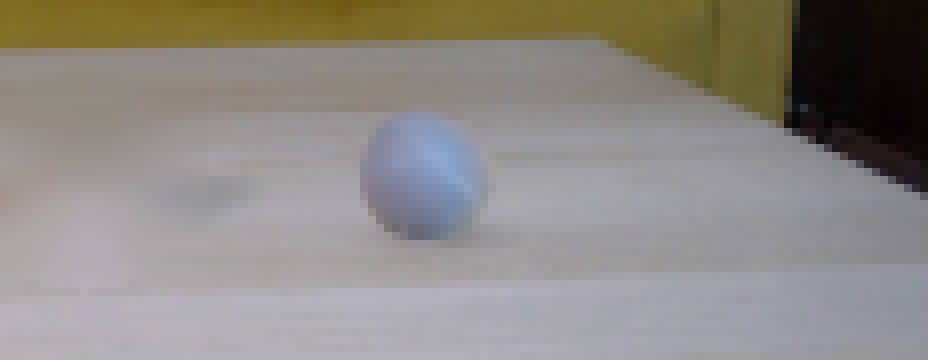
视觉工具实际返回图片 20
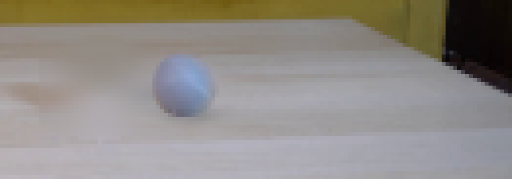
视觉工具实际返回图片 21
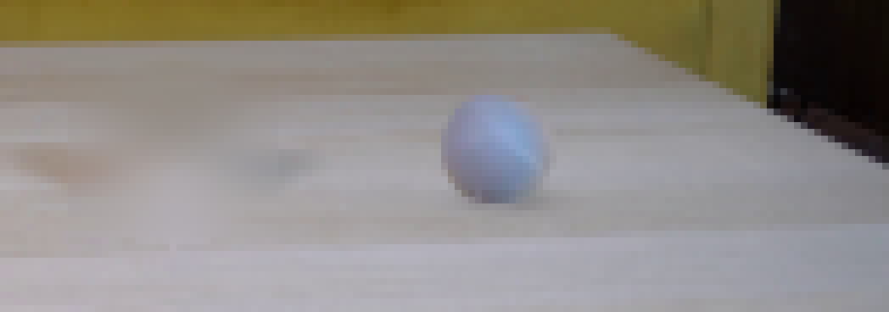
视觉工具实际返回图片 22
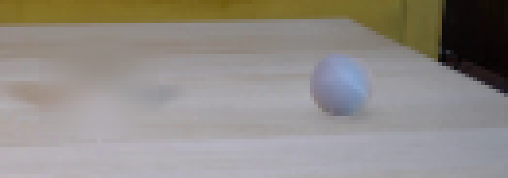
视觉工具实际返回图片 23
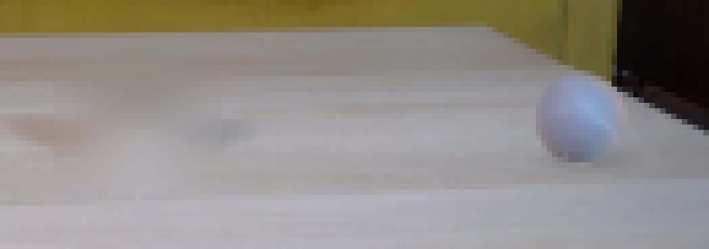
视觉工具实际返回图片 24
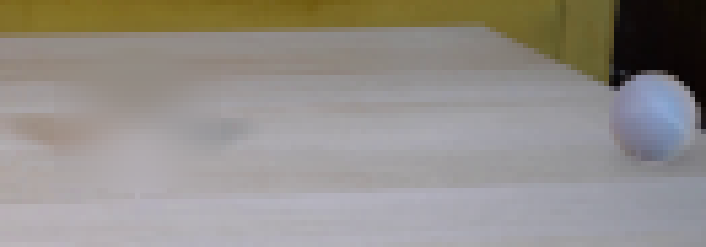
视觉工具实际返回图片 25
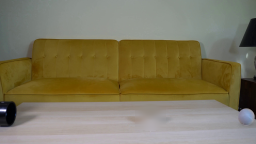
视觉工具实际返回图片 26

保存候选 2 份；完成命令 56 次；可验证图片返回 26 张。原始 API 响应与完整日志保留在本地。